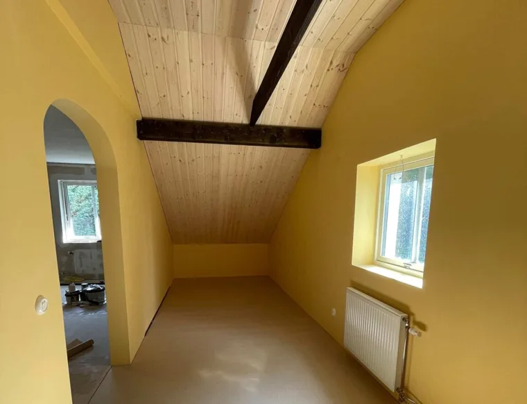
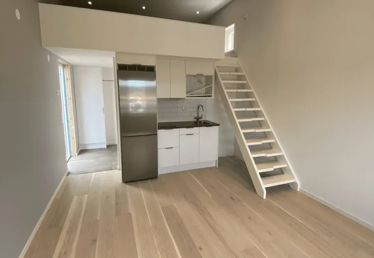
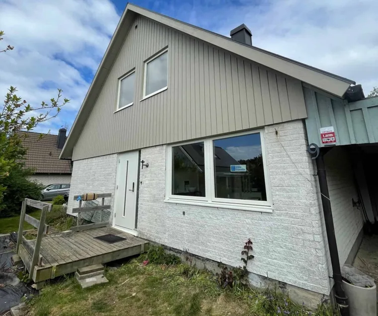
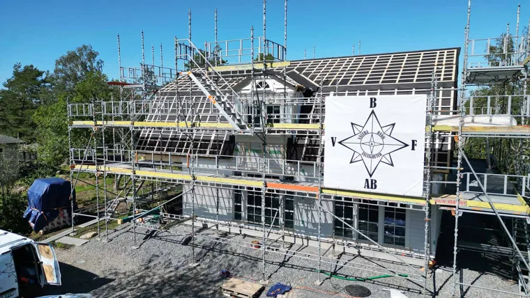
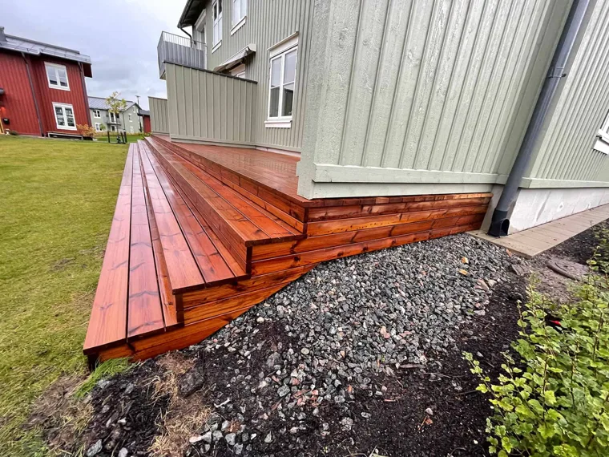

Hela huset.
Alla möjligheter.
Renovera, bygga till eller skapa något nytt. Vi hjälper dig att hitta en genomtänkt väg från idé till utfört arbete.

Ombyggnation & renovering
En ny planlösning, en omsorgsfull uppdatering eller en större förändring. Vi hjälper dig att ge huset ett nytt kapitel.

Attefallshus
Plats för gäster, vardagsro eller en ny funktion på tomten. Vi hjälper dig att forma ett fristående hus efter dina behov.

Köksrenovering
Från en varsam uppdatering till ett helt nytt kök. Vi hjälper dig att få ihop funktion, material och detaljer.

Fönsterbyte
Nya fönster kan göra stor skillnad för både husets uttryck och känslan inomhus. Vi hjälper dig med bytet.

Takbyte & takarbeten
Nytt tak, reparation eller tak på en ny byggnad. Vi hjälper dig att hitta rätt lösning för huset.

Badrumsrenovering
Genomtänkta badrum med omsorg om både känslan och arbetet bakom ytan. Från första idé till färdig helhet.

Altan & terrass
En solig frukostplats, en terrass för många eller en välkomnande veranda. Vi bygger efter huset och livet runt det.

Tillbyggnation
När behoven förändras kan en tillbyggnad skapa plats för mer. Vi hjälper dig att se möjligheterna i ditt hus.
En tydlig väg
från tanke till klart.
- 01
Vi lyssnar
Berätta om din idé och vad du vill få ut av projektet. Vi går igenom förutsättningarna tillsammans.
- 02
Vi planerar
Omfattning, material och tidplan blir grunden för en tydlig offert och ett skriftligt avtal.
- 03
Vi bygger
Våra snickare och samarbetspartner tar hand om genomförandet, med dialog längs vägen.
- 04
Vi går igenom
Vi avslutar med en gemensam genomgång. Du får ett utfört arbete att leva med och använda.
Vad vill du
bygga vidare på?
En tydlig idé eller bara en tanke.
Berätta så tar vi det därifrån.